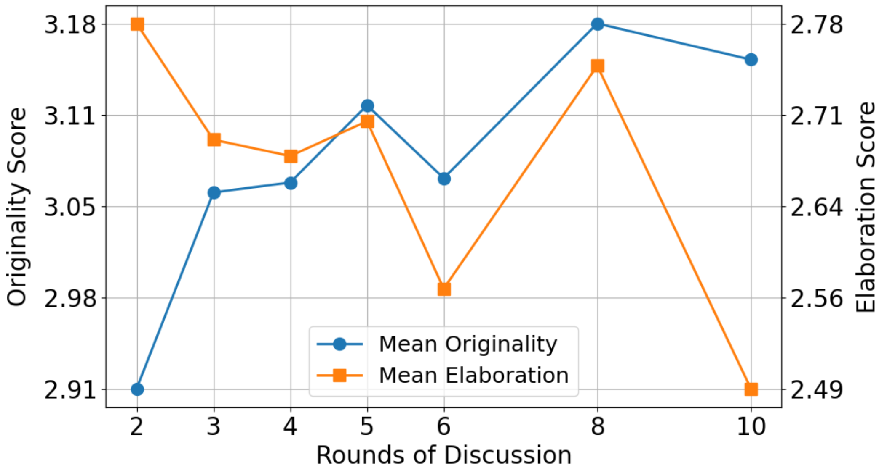

Introduction
The Promise of Creative AI
Large language models (LLMs) have emerged as highly efficient tools in addressing daily challenges across various applications, demonstrating exceptional capabilities in natural language processing. Specifically, LLMs achieve excellent performance in language comprehension tasks, such as sentiment analysis and question answering, and are widely adopted in content generation tasks — from writing articles to composing poetry — by producing coherent and contextually relevant text that closely mimics human-written content.
Multi-LLM Paradigms: Promise and Limitations
Recent studies highlight the potential of multi-LLM paradigms, which aim to simulate human collective intelligence by engaging multiple LLMs in iterative discussion to arrive at more comprehensive and well-balanced solutions. This paradigm allows systems to generate a broader range of ideas beyond what a single model can reach.
In the context of creativity, these frameworks often assign diverse roles to LLMs and employ structured, multi-round interactions. For example, one LLM may act as a creative professional while another serves as an environmentalist, enabling the system to explore and integrate multiple perspectives through iterative exchanges.
Despite these advantages, multi-LLM frameworks face two major challenges. First, many modern LLMs are not specifically trained or reinforced for sustained multi-turn conversations, which can lead to unengaging discussions that quickly converge. Second, the high homogeneity of LLMs makes it difficult for discussions to diverge and produce creative outcomes, as agents often generate similar responses.
LLM Discussion
To address these issues, we develop a role-play enhanced LLM discussion framework, dubbed LLM Discussion, as illustrated in Figure 1. To facilitate vigorous and diverging exchanges throughout rounds of discussion and ensure convergence to creative answers, we arrange a three-phase discussion and design prompts specialized in the initiation phase, the discussion phase, and the convergence phase.
To tackle LLM homogeneity, we adopt a role-playing technique, an established practice in Design Thinking. Specifically, we assign a diverse set of roles with distinct backgrounds and perspectives to LLM agents participating in a discussion, such as Visionary Millionaire and Futurist, and roles specialized for various facets of discussion inspired by methods like Six Thinking Hats.
- Framework: We propose LLM Discussion, a role-play enhanced, three-phase discussion framework that encourages divergent exchanges and converges to creative answers.
- Role-Play: We introduce a role assignment mechanism to increase diversity among agents and mitigate LLM homogeneity.
- Evaluation: We evaluate on four creativity benchmarks adapted from the Wallach–Kogan Creativity Test and report both LLM and human evaluations on Originality, Elaboration, Fluency, and Flexibility.
- Results: Experiments and human studies demonstrate that LLM Discussion outperforms baselines in producing creative answers across multiple metrics.
Method
üí¨ Three-Phase Discussion Framework
To foster meaningful interaction and avoid rapid convergence, we designed a three-phase process:
- Initiation Phase: Introduce the topic and objectives, establishing a consensus for group discussion.
- Discussion Phase: Over multiple rounds, LLMs receive responses from other agents and build upon their ideas.
- Convergence Phase: In the final round, summarize all ideas and converge on a collective, creative conclusion.
üé≠ Role-Playing Mechanism
To overcome the "homogeneity" problem where LLMs think alike, we introduce role-play. This helps generate fundamentally diverse perspectives.
- Diverse Roles: We automatically generate a set of roles with diverse backgrounds and perspectives (e.g., Visionary Billionaire, Startup Founder, Environmentalist).
- Role Prompt: Each LLM is assigned a role before the discussion and reminded of its identity each round to ensure its responses align with the persona.
Evaluation
Creativity Benchmarks
| Benchmark | Description | Sample Task |
|---|---|---|
| AUT | Evaluates divergent thinking by requiring the generation of numerous unconventional applications for an object. | What are some creative uses for a mug? |
| INSTANCES | Measures the ability to produce a diverse set of examples that satisfy a given property. | Name 5 square things you can think of. |
| SIMILARITIES | Assesses associative creativity by challenging participants to identify non-obvious connections between two concepts. | Tell me 5 ways in which a brick and a stone are alike. |
| SCIENTIFIC | Probes creative problem-solving within a scientific framework. | Find different scientific uses for a spoon. |
Evaluation Metrics
Originality
Assesses the novelty and unconventionality of responses.
Elaboration
Measures the amount of detail used to extend a response.
Fluency
Measures the number of relevant responses.
Flexibility
Measures the variety of categories or perspectives in responses.
Evaluation Method
LLM Evaluation
Using gpt-3.5-turbo-0125 as a judge, we score all generated responses based on the defined metrics.
Human Evaluation
We conducted a comprehensive human evaluation, collecting over 1,400 assessments from 42 annotators using the same TTCT-based rubric.
Baselines
We compare LLM Discussion with several single-agent and multi-agent frameworks.
Single Agent
A single LLM agent using a zero-shot prompt to solve the task.
Brainstorm, then Select
A single-LLM framework designed for AUT, which includes a selection phase to judge the creativity of potential solutions.
LLM Debate
A multi-LLM framework aimed at improving factuality and reasoning. Agents check others' responses for correctness rather than building on their ideas.
Results
Main Results
LLM Evaluation Results. LLM Discussion surpasses all baselines in Originality across all four benchmarks and achieves the best Elaboration scores on three benchmarks.
Qualitative Results

A comparison of responses for the AUT and SCIENTIFIC benchmarks. LLM Discussion generates more innovative and detailed ideas (e.g., "Towel Storybook Quilt") compared to the more common responses from baselines.
LLM & Human Alignment
Kendall's τ correlation shows a strong alignment between LLM and average human judgments for Originality, Fluency, and Flexibility. This suggests LLM evaluation is a reliable proxy for human assessment.
Analysis
We conducted ablation studies to determine the optimal settings for our main experiments.
Analysis of Discussion Rounds
Originality increases with more discussion rounds, but Elaboration decreases after 5 rounds. We chose 5 rounds as a balance.
Analysis of Agent Count
With 5 discussion rounds, using 4 LLM agents achieved the best overall performance.
Conclusion
We proposed LLM Discussion, a method to enhance LLM creativity by emulating the human discussion process.
Our three-phase framework facilitates multi-round, interactive discussions, while the role-play mechanism effectively mitigates LLM homogeneity.
Through LLM evaluation and human studies, our framework outperforms single-LLM and existing multi-LLM frameworks on Originality and Elaboration across four creativity benchmarks.
How to Cite
üìÑ Paper
[https://arxiv.org/abs/2405.06373]
üíª Code
[https://github.com/lawraa/LLM-Discussion]
BibTeX
@misc{lu2024llm,
title={LLM Discussion: Enhancing the Creativity of Large Language Models via Discussion Framework and Role-Play},
author={Li-Chun Lu and Shou-Jen Chen and Tsung-Min Pai and Chan-Hung Yu and Hung-yi Lee and Shao-Hua Sun},
year={2024},
eprint={2405.06373},
archivePrefix={arXiv},
primaryClass={cs.CL}
}